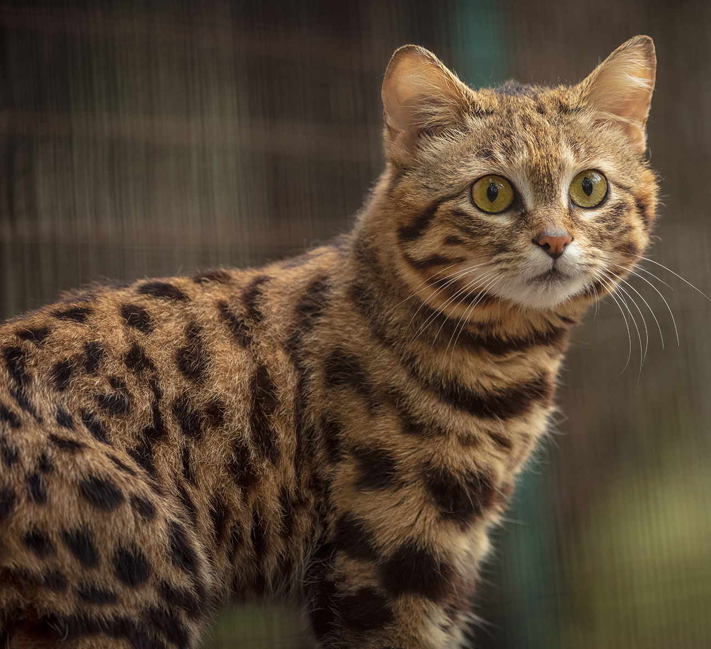

What are cats?
Cats are a carnivorous mammal belonging to the family of Felidae. The domestic cat, Felis catus, is hopefully the cats most often seen by humans on a regular basis. They were most likely domesticated around 4,000 years ago in Ancient Egypt.
Fun Fact! The Egyptian Mau Cat is thought to be the first domesticated cat. "Mau" is the word "cat" in Egyptian, and it’s speculated the name came from the meow of cats.
Why did cats get domesticated?
Cats are natural at killing smaller animals, such as rodents. Ancient Egyptian cites most likely drew in a lot of rodents, and with them came cats. Seeing the potential of cats, (and most likely cooing at how adorable they are), Egyptians kept them around to keep the pests out.
Fun Fact! According to PBS Nature the deadliest cat is the Black-footed cat; a cat that has males weighing at 4.2 lbs and females 2.9 lbs. They have a 60 percent hunting success rate, lions only have a 25 percent chance of having a successful kill.
What are cats doing now?
Nowadays, most cats in developed countries aren’t purchased for the thought of keeping rats and other pests out. While its certainly a benefit, most cat owners have cats to simply have a pet.
Fun Fact! It's a common belief that cats don’t have that familiar bond that most dogs do, and only tolerate humans for easy food and a safe home. While food and shelter are important, Kristyn Vital form Oregon State University study shows that most cats are as loyal as dogs.
What are the pros of owning cats?
Owning a cat can be hard work but to some people their the right pet! Some pros are:
Cats are generally low maintenance.
Most cats are fine inside if they have plenty of stimulation.
If the owner respects the cat, they'll respect the owner back.
Some cats are very affectionate.
They sleep an average of 15 hours a day.
They don't require that much space.
What are the cons of owning cats?
Of course, cats aren't for everyone! But no pet is perfect, and owners need to weigh out the pros and cons. Some cons are:
Their litter boxes need to be constantly cleaned to avoid the smell.
They scratch and bite when frightened.
They can be very vocal, especially if they want or need something.
If you own a small animal its a possibitly that a cat will harm it.
They shed a lot and may require daily combing.
The cost of cats varies depending on breed, size, health, and other needs.
Should I get a cat?
This page was really only a brief explanation of cats. Cats, and any pets, are living creatures and shouldn’t be treated as inanimate objects. Research is a key part of owning pets; keep in mind your budget! If you get a pet cat, don't stress it out! That’s when cats feel threatened and will scratch and bite.